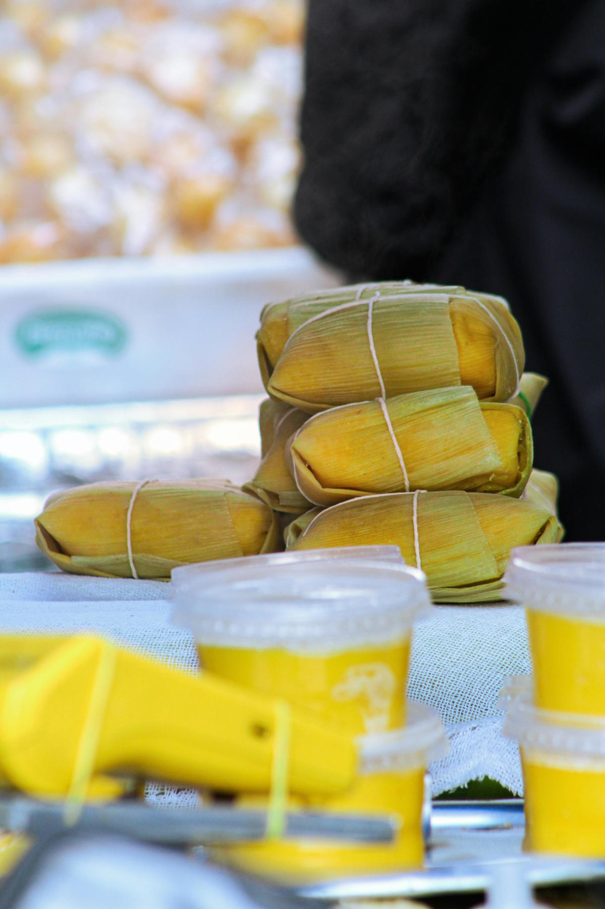
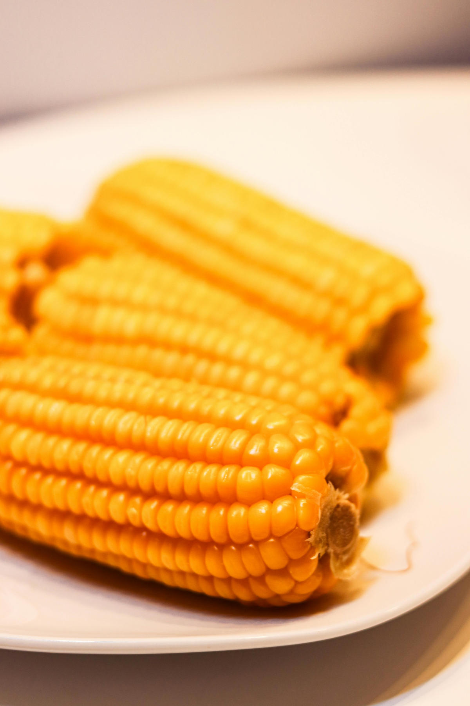
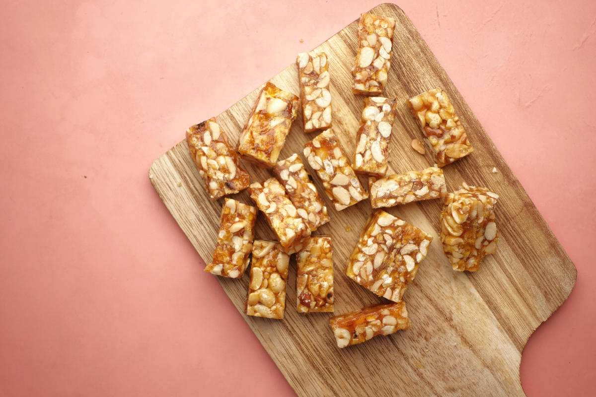

🥮 Pamonha

🌽 Milho Cozido

🍬 Pé de Moleque

📜 Cordel Junino
Na fogueira iluminada
O sertão virou canção
Entre estrelas e bandeiras
Dança viva o coração.
🌽✨ Obrigado por visitar este Cordel Junino Digital ✨🌽
Entre versos, bandeiras e tradição,
Cada palavra foi escrita com dedicação.
Misturando cultura, poesia e programação,
Nasceu este pequeno arraial em forma de criação.
Que a alegria da festa junina
Continue acesa no seu coração,
Como fogueira que ilumina
Os caminhos da imaginação.
🎇 Viva São João! 🎇